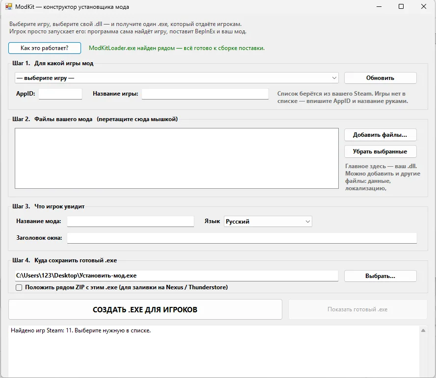

ModKit — конструктор установщика модов для Unity-игр (BepInEx)
Вы написали мод для Unity-игры. ModKit превращает ваш .dll в один .exe: игрок запускает его — и мод установлен. Без «скачайте BepInEx, распакуйте, положите в plugins».

Мод готов — осталось, чтобы его смогли поставить
Самая нелюбимая часть моддинга — объяснять игрокам установку и разбирать сломанные папки BepInEx в комментариях. ModKit убирает этот шаг: вы выбираете игру из своего Steam, перетаскиваете .dll и получаете один файл для раздачи.
Игрок скачивает этот .exe и запускает. Программа сама находит игру, ставит BepInEx и ваш мод.
Возможности установщика
- Находит игру в Steam: реестр, libraryfolders.vdf, appmanifest; не нашёл — показывает список игр.
- Определяет разрядность игры по заголовку её .exe.
- Скачивает последний стабильный BepInEx с официального GitHub, проверяет и чинит битую установку.
- Не ломает чужие моды: папка plugins уходит в резервную копию, вернуть её можно из меню.
- Сколько угодно .dll, ассеты и локализация — всё внутри одного файла.
- Понятные сообщения («закройте игру») и тихий режим с ключами --install, --remove, --silent.
- Русский и английский язык.
Для каких игр подходит
Windows, игры на Unity с BepInEx. Игры не из Steam тоже можно: название вписывается вручную, папку игрок укажет сам. BepInEx 6 / IL2CPP работает, если задать ссылку на архив в настройках.
Антивирус может насторожиться на готовый .exe: программа пишет в папку игры и скачивает файлы. Для установщиков модов это обычное поведение.
Частые вопросы
Что в архиве?
Конструктор-установщика.exe (окно для вас), ModKitLoader.exe (то, что вшивается в файл для игроков) и подробная справка.
Нужно ли ставить .NET?
Нет, нужный .NET Framework уже есть в Windows 10 и 11.
Подойдёт для Unreal или Godot?
Нет, только Unity + BepInEx.